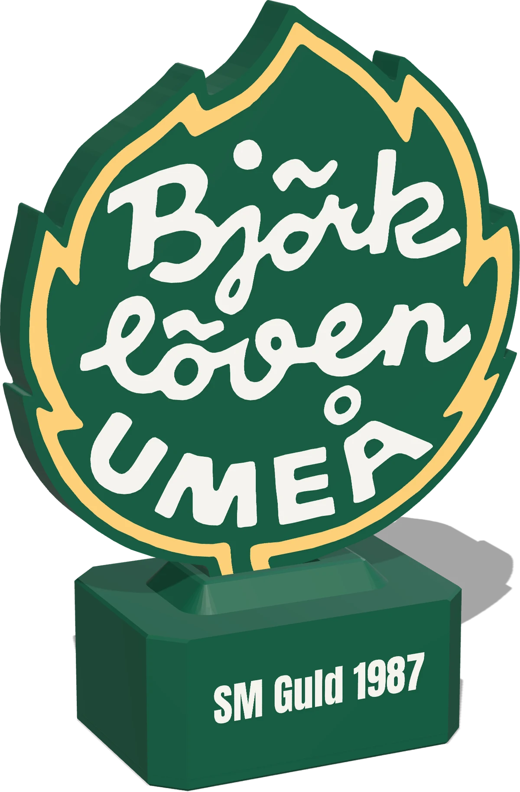
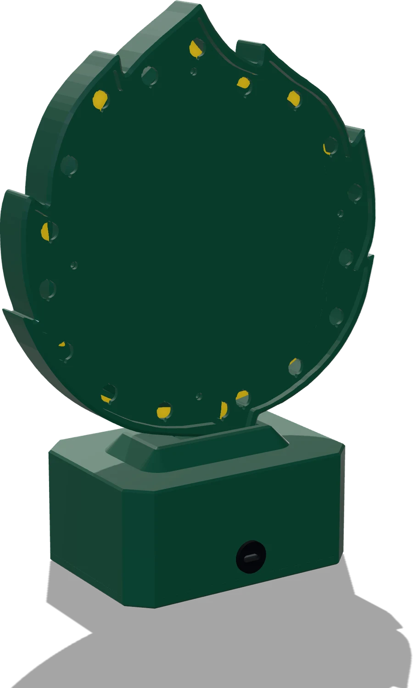

Björklöven, i ljus
LövGlöd
Lövet som följer Löven. Det glöder lugnt en vanlig tisdag, vaknar när pucken släpps och exploderar när vi gör mål.

- Följer varje matchSpelschema och mål direkt från SHL. Inga appar, inga konton.
- Tolv sekunders målStroboskop och kometer, i takt med tv-sändningen.
- Sköter sig självKoppla in med USB-C, ställ in med mobilen. Uppdaterar sig över WiFi.
Se den leva
Lampan läser matchen åt dig. Du behöver aldrig röra den.
[KLIPP · LOOP]
[KLIPP · LOOP]
[KLIPP · LJUD PÅ]
Ljusspråket
- Glöd Vardag. Ett långsamt gult andetag.
- Vann igår Vita gnistor ovanpå glöden till midnatt.
- Match pågår Bärnsten och snabbare andetag.
- MÅL Tolv sekunder fyrverkeri.
- Setup Grön puls. Anslut med mobilen.
- Ingen data Svagt rött. SHL svarar inte.
Formgiven in i detalj
Klubbens löv i 220 mm, med det gula bandet som ljusfönster och texten i vitt, i nivå med ytan.
Färgen sitter i ytan
Text och band är inlagda, inte målade. Framsidan är helt plan och skarp.
Jämnt ljus runt om
LED-listen lyser från sidan in i bandet, så det glöder jämnt utan synliga prickar.
Ventilerad baksida
Arton ventiler precis över listen håller lövet svalt.
Inga synliga skruvar
Elektroniken bor i sockeln. Framifrån syns bara lövet och SM Guld 1987.
Specifikation
- Mått (b × d × h)
- 182,6 × 84 × 250,5 mm
- Material
- PLA i grönt, vitt och transparent gult, 307 g
- Ljus
- Adresserbar LED-list bakom det gula bandet
- Styrenhet
- ESP32 med WiFi (2,4 GHz)
- Ström
- USB-C i sockelns baksida, 5 V
- Matchdata
- SHL:s publika API
- Uppdateringar
- Automatiska och signerade, med rollback
- Inställningar
- Statussida i webbläsaren: ljusstyrka, tv-fördröjning, målfyrverkeri
